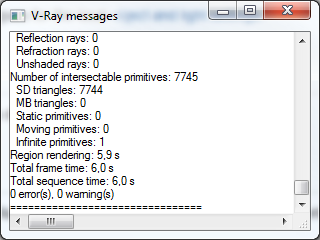

System
System Overview
In this section, you can adjust a variety of V-Ray parameters related to the overall operation of the renderer.
Raycaster Parameters
Here you can control various parameters of V-Ray's Binary Space Partitioning (BSP) tree.
One of the basic operations that V-Ray must perform is raycasting - determining if a given ray intersects any geometry in the scene, and if so, identifying that geometry. The simplest way to implement this would be to test the ray against every single render primitive (triangle) in the scene. Obviously, in scenes with thousands or millions of triangles this is going to be very slow. To speed this process, V-Ray organizes the scene geometry into a special data structure, called a binary space partitioning (BSP) tree.
The BSP tree is a hierarchical data structure, built by subdividing the scene in two parts, then looking at each of those two parts and subdividing them in turn, if necessary and so on. Those "parts" are called nodes of the tree. At the top of the hierarchy is the root node - which represents the bounding box of the whole scene; at the bottom of the hierarchy are the leaf nodes - they contain references to actual triangles from the scene.
Max tree depth - the maximum depth of the tree. Larger values will cause V-Ray to take more memory, but the rendering will be faster - up to some critical point. Values beyond that critical point (which is different for every scene) will start to slow things down. Smaller values for this parameter will cause the BSP tree to take less memory, but rendering will be slower.
Min leaf size - the minimum size of a leaf node. Normally this is set to 0.0, which means that V-Ray will subdivide the scene geometry regardless of the scene size. By setting this to a different value, you can force V-Ray to quit subdividing, if the size of a node is below a given value.
Face/level coef - controls the maximum amount of triangles in a leaf node. If this value is lower, rendering will be faster, but the BSP tree will take more memory - up to some critical point (which is different for every scene). Values below that critical point will make the rendering slower.
Default geometry - internally, V-Ray maintains four raycasting engines. All of them are built around the idea of a BSP tree, but have different uses. The engines can be grouped into raycasters for non-motion blurred and for motion blurred geometry, as well as for static and dynamic geometry. This parameter determines the type of geometry for standard 3ds Max mesh objects. Note that some objects (displacement-mapped objects, VRayProxy and VRayFur objects, for example) always generate dynamic geometry, regardless of this setting.
-
Static - all geometry is precompiled into an acceleration structure at the beginning of the rendering and remains there until the end of the frame. The static raycasters are not limited in any way and will consume as much memory as necessary.
-
Dynamic - geometry is loaded and unloaded on the fly depending on which part of the scene is being rendered. The total memory taken up by the dynamic raycasters can be controlled by the Dynamic memory limit parameter.
-
Auto - some objects are compiled as static geometry, while others as dynamic. V-Ray makes the decision on which type to use based on the face count for an object and the number of its instances in the scene.
Dynamic memory limit - the total RAM limit for the dynamic raycasters which store dynamic geometry like displacement, VRayProxy objects, VRayFur strands etc. Note that the memory pool is shared between the different rendering threads. Therefore, if geometry needs to be unloaded and loaded too often, the threads must wait for each other and the rendering performance will suffer. In V-Ray 2.0 and later, you can set this to 0 to remove any limit in that case, V-Ray will take as much memory as needed.
Render Region Division
Here you can control various parameters of V-Ray's rendering regions (buckets). The bucket is an essential part of the distributed rendering system of V-Ray. A bucket is a rectangular part of the currently rendered frame that is rendered independently from other buckets. Buckets can be sent to idle LAN machines for processing and/or can be distributed between several CPUs. Because a bucket can be processed only by a single processor the division of the frame in too small a number of buckets can prevent the optimal utilization of computational resources (some CPUs stay idle all the time). However the division of the frame in too many buckets can slow down the rendering because there is a some time overhead related with each bucket (bucket setup, LAN transfer, etc).
X - determines the maximum region width in pixels (Region W/H is selected) or the number of regions in the horizontal direction (when Region Count is selected)
Y - determines the maximum region height in pixels (Region W/H is selected) or the number of regions in the vertical direction (when Region Count is selected)
Region sequence - determines the order in which the regions are rendered. Note that the default Triangulation sequence is best if you use a lot of dynamic geometry (displacement-mapped objects, VRayProxy or VRayFur objects), since it walks through the image in a very consistent manner so that geometry that was generated for previous buckets can be used for the next buckets. The other sequences tend to jump from one end of the image to another which is not good with dynamic geometry.
Reverse sequence - reverses the region sequence order.
Previous render - this parameter determines what should be done with the previous image in the virtual frame buffer when rendering starts. Note that this parameter has no effect on the final result of the rendering; it is implemented simply as a convenient way to distinguish between parts from the current frame being rendered, and part left over from the previous rendering. The possible values are:
-
Unchanged - no changes will be made - the virtual frame buffer remains the same;
-
Cross - every second pixel of the image will be set to black;
-
Fields - every other line of the image will be set to black;
-
Darken - the colors in the image will be darkened.
-
Blue - the previous image is tinted in blue.
Frame Stamp
The frame stamp is a convenient way to put some short text over the rendered images. It can be useful in many ways - for example, in network rendering, to quickly determine which frames were rendered by which machine. The frame stamp is one line of text, which appears at the bottom of the image.
Checkbox - turns the frame stamp on and off.
Edit box - here you enter the text you wish to appear in the images. You can also use some special keywords, all of which begin with the percent symbol (%). The keywords are replaced by V-Ray with the corresponding value:
|
Keyword |
Meaning |
|
%vrayversion |
the current version of V-Ray |
|
%filename |
the name of the current scene file |
|
%frame |
the number of the current frame |
|
%primitives * |
the number of unique intersectable primitives generated for the current frame* |
|
%rendertime |
the render time for the current frame |
|
%computername |
the network name of the computer |
|
%date |
the current system date |
|
%time |
the current system time |
|
%w |
the width of the image in pixels |
|
%h |
the height of the image in pixels |
|
%camera |
the name of the camera for this frame (if rendering from a camera, empty string otherwise) |
|
%"<maxscript parameter name>" |
the value of any V-Ray parameter, given its MaxScript name (see section on MaxScript ). Note that you must enclose the parameter name in quotation marks ("). Also note that this option only works when rendering to the 3ds Max frame buffer. |
|
%ram |
the amount of physical memory (in KBytes) installed on the system |
|
%vmem |
the amount of virtual memory (in KBytes) available on the system |
|
%mhz |
the clock speed of the system CPU(s) |
|
%os |
the operating system |
* An intersectable primitive is a primitive that provides a direct method for intersection with a ray (such as a triangle, the infinite plane generated by a VRayPlane plugin, etc.). Most often, the number of these primitives is the same as the number of triangles (faces) processed by V-Ray for the current frame. Note that this may be different from the total number of triangles in the scene. With the dynamic raycaster, only geometry that is actually needed is generated and accounted for. Geometry that is not generated is not included in this count.
Font - this button allows you to choose a font and font attributes for the text in the frame stamp.
Full width - when this option is checked, the frame stamp will take the whole width of the image, otherwise the stamp will be only as wide as the text is.
Justify - specifies the position of the stamp:
-
Left - the stamp is placed on the left of the image.
-
Center - the stamp is centered.
-
Right - the stamp is placed on the right side of the image.
Distributed Rendering
Distributed rendering is the process of computing a single image over several different machines. Note that this is different from distributing the frame over several CPU's in a single machine, which is called multithreading . V-Ray supports multithreading, as well as distributed rendering.
Before you can use the distributed rendering option, you must determine the machines that will take part in the computations. Both 3ds Max and V-Ray need to be properly installed on those machines, although they don't need to be authorized. You must make sure that the V-Ray spawner application is running on those machines - either as a service, or as a stand-alone application. Refer to the Installation section for more details on configuring and running the V-Ray spawner.
For additional information on distributed rendering, please refer to the dedicated Distributed rendering section.
Distributed rendering - this checkbox specifies whether V-Ray will use distributed rendering.
Settings... - this button opens the V-Ray distributed rendering settings dialog. See the Distributed rendering section for more information.
Object Settings / Light Settings
These buttons bring up the dialogues for the local object and light settings.
Presets
This button brings up the presets dialogue.
V-Ray Log
 These parameters control the V-Ray messages window. During rendering, V-Ray writes various information in the file C:\VRayLog.txt. The messages window shows some of that information so that you can view it without the need to manually open that file.
Each message can fall into one of four categories, which are colored in a different way in the messages window. Those categories are errors (colored in red), warnings (colored in green), informative messages (colored in white) and debug messages (colored in black).
Show window - when this is turned on, V-Ray will show the messages window at the start of every render.
Level - this determines what kind of messages will be showed in the window:
-
1 - only error messages
-
2 - error and warning messages
-
3 - errors, warnings and informative messages
-
4 - all messages
Log file - this parameter determines the location and the name of the log file. The default log file is C:\VRayLog.txt
Other Parameters
MAX-compatible ShadeContext - V-Ray carries all its computations in world space. However, some 3ds Max plugins (notably atmospherics) take it as granted that the renderer works in camera space, because this is what the default scanline renderer does. To preserve compatibility with such plugins, V-Ray emulates work in camera space by converting the various points and vectors passed to and from other plugins. In addition to slowing down V-Ray by forcing it to convert values all the time, working in camera space messes up with camera modifiers such as the Technical camera script. This why you have the option of turning off the camera-space emulation.
Check for missing files - when this is on, V-Ray will try to find any missing files in the scene and will put up a dialog listing them, if there are any. The missing files will also be printed to the C:\VRayLog.txt file. If this option is on, and you render the scene with distributed rendering, and if a render servers detects missing files, it will refuse to render the scene.
Optimized atmospheric evaluation - normally in 3ds Max, atmospherics are evaluated after the surface behind them has been shaded. This may be unnecessary if the atmospheric is very dense and opaque. Turning this option on will cause V-Ray to first evaluate the atmospheric effects, and shade the surface behind them only if the atmospherics are sufficiently transparent.
Low thread priority - turning this on will cause V-Ray to use threads of lower priority when rendering.